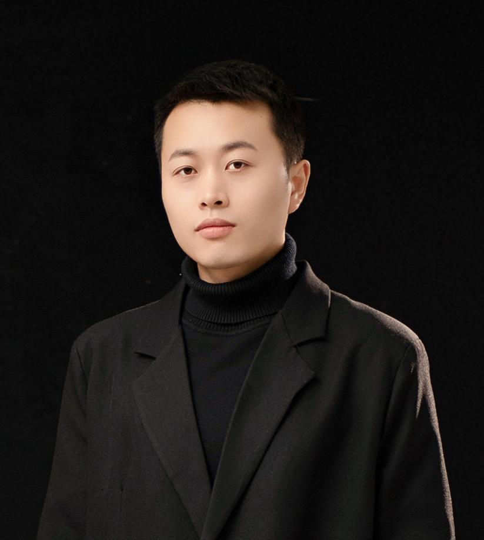

教育经历
- 清华大学
设计学 · 博士
- 北京工业大学
工业设计工程 · 硕士
- 北京工业大学
工业设计 · 本科
工作经历
- 中国美术学院工业设计学院
特聘副教授
- 清华大学未来实验室
博士后 / 助理研究员

任教于中国美术学院工业设计学院，研究方向包括数字化设计、智能制造、人机交互等。曾任清华大学未来实验室智能制造课题组负责人，多年机械臂制造相关经验，近年来致力于通过多学科交叉，针对柔性制造场景中的前沿问题展开研究，强调设计师的思维与机械臂建造能力的相互促进。
设计学 · 博士
工业设计工程 · 硕士
工业设计 · 本科
特聘副教授
博士后 / 助理研究员
Qiang Cui, Chuan Yu, Daoqian Yang, Jiangshan Li, Chunyang Yu. A dual-loop framework for manufacturability-aware topology optimization of electric vehicle structures via wire arc additive manufacturing. Robotics and Computer-Integrated Manufacturing, 101:103273.
Qiang Cui*, Zemin Shao. A path planning and online compensation method for wire arc additive manufacturing of thin-walled curved hollow structure. The International Journal of Advanced Manufacturing Technology.
Yingri Xu, Qiang Cui*, et al. EasyFDM: AI-Assisted Multimaterial 3D Printing with Text and Image Representation. CHI EA 2025.（通信）
Jianlin Li*, Qiang Cui*, et al. Integrated vehicle chassis fabricated by wire and arc additive manufacturing: structure generation, printing radian optimisation, and performance prediction. Virtual and Physical Prototyping.（共一）
Zemin Shao, Qiang Cui*. Dual-Robot Non-planar 3D Printing Path Planning and Compensation. 3D Printing and Additive Manufacturing.（通信）
Zhou Z, Chen P, Lu Y, Cui Q, et al. 3D Deformation Capture via a Configurable Self-Sensing IMU Sensor Network. UbiComp 2023.
Wang G, Yang Y, Guo M, Zhu K, Yan Z, Cui Q, et al. ThermoFit: Thermoforming Smart Orthoses via Metamaterial Structures for Body-Fitting and Component-Adjusting. UbiComp 2023.
Cui Q, Pawar S S, et al. Forming Strategies for Robotic Incremental Sheet Forming. CAADRIA 2022.
Cui Q, Zhang H, Pawar S S, et al. Topology Optimization for 3D-Printable Large-Scale Metallic Hollow Structures With Self-Supporting. CAADRIA 2022.
Gu J, Lin Y, Cui Q, et al. PneuMesh: Pneumatic-driven Truss-based Shape Changing System. CHI 2022.
Qiang Cui, Fei Yue. Parametric Design of Personalized 3D Printed Sneakers. The International Conference on Computational Design and Robotic Fabrication.
一种金属板材的空间折弯方法、装置、电子设备及可读介质
第一发明人一种电弧熔丝增材制造路径生成方法
第一发明人一种基于3D打印的车架结构优化方法
第一发明人一种电弧熔丝增材制造底盘结构设计方法
第一发明人基于深度强化学习的双点渐进成形制造方法及装置
第一发明人双点渐进成形制造方法、装置及电子设备
第一发明人一种Al-Mg-Zn-Cu铝合金试件及其制备方法与应用